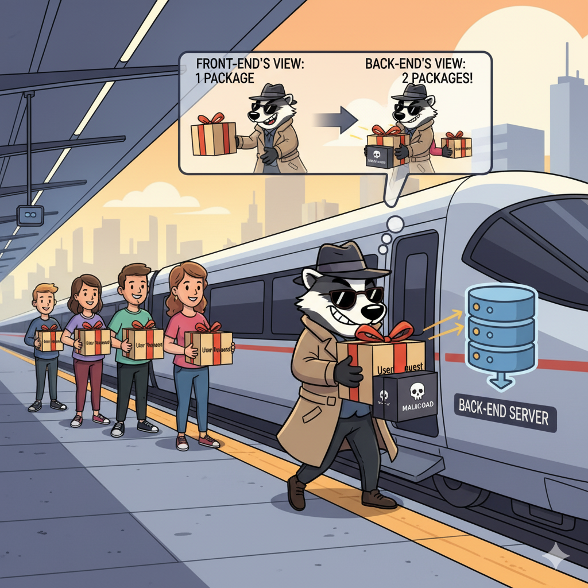

The Desync Endgame: Bypassing Modern Defenses
After six years of warnings, the fundamental flaw in HTTP/1.1 continues to expose web applications to devastating Desync Attacks and Request Smuggling, demanding an urgent shift to modern protocols.
For over six years, a fundamental security flaw has persisted across the web. HTTP/1.1, the protocol underpinning much of our online interactions, suffers from a critical vulnerability: its inability to reliably isolate individual HTTP requests. This isn't merely a theoretical concern; it's a systemic weakness that enables HTTP Desync Attacks, primarily through the potent technique of Request Smuggling.
The research into web security consistently highlights the significant threat posed by HTTP Desync Attacks. This article builds upon the invaluable contributions of leading researchers, most notably James Kettle, Head of Research at PortSwigger Web Security, whose foundational work has profoundly shaped our collective understanding of these vulnerabilities. For comprehensive insights into evolving attack techniques and their real-world impact, I highly recommend exploring the extensive resources available at PortSwigger's dedicated resource.
Despite repeated warnings from the web security community, vast portions of the internet remain vulnerable. The reality is stark: HTTP/1.1, in its current state, represents a significant security risk, and the "Desync Endgame" is increasingly relevant.
Even with the advent of newer, more secure protocols like HTTP/2 and HTTP/3, continued reliance on HTTP/1.1 for upstream connections exposes millions of websites to severe compromises. These include full cache poisoning, credential theft, and session hijacking. Recent research indicates these techniques could impact over 30 million websites by exploiting vulnerabilities within major Content Delivery Networks (CDNs).
The Core Vulnerability: Conflicting Message Lengths
The root of HTTP/1.1's vulnerability lies in a fundamental parsing ambiguity, inherent in its design as a lenient, text-based protocol. Unlike modern protocols like HTTP/2 and HTTP/3, which use explicit binary framing to clearly define message boundaries, HTTP/1.1 relies on inspecting specific headers (such as Content-Length and Transfer-Encoding) to determine where one request ends and the next begins. This text-based interpretation makes it inherently susceptible to misinterpretation by different network components.
In HTTP/1.1, multiple requests are often multiplexed (concatenated back-to-back) over a single, shared TCP connection. The risk emerges because the protocol offers multiple, sometimes conflicting, ways to define message boundaries. When an HTTP request traverses various intermediaries—such as load balancers, reverse proxies, or Web Application Firewalls (WAFs)—before reaching the origin server, each component independently attempts to interpret the request's length. A desynchronization (desync) of the request stream occurs when these components disagree on where one request truly ends and the next begins.
This ambiguity typically stems from inconsistencies in how servers interpret two primary message length headers:
Content-Length(CL): Specifies the exact size of the request body in bytes.Transfer-Encoding: chunked(TE): Indicates that the request body is sent in variable-sized chunks, terminated by a zero-length chunk.
While the HTTP/1.1 specification technically states that Transfer-Encoding should take precedence over Content-Length if both are present, many servers do not strictly or consistently adhere to this rule. This inconsistency creates the attacker's primary playground.
HTTP Desync Attack Lifecycle
A successful HTTP Desync attack follows a structured methodology, moving from initial detection to full exploitation. Understanding these phases is crucial for both attackers and defenders.
1. Detecting Vulnerable Systems
The first step is to identify if a system is potentially vulnerable to request smuggling. This typically involves sending crafted requests and observing how the server responds.
- Timing Differences: Send requests that might cause the back-end to hang or process slowly if desynced. If the front-end responds quickly while the connection to the back-end remains open, it suggests a desync.
- Error Responses: Malformed requests can trigger different error responses from the front-end versus the back-end, indicating parsing discrepancies.
- Automated Tools: Tools like Burp Suite's HTTP Request Smuggler extension are designed to automate the process of sending various desync probes and analyzing responses.
2. Confirming Desynchronization
Once a potential vulnerability is detected, confirmation is key. This involves sending two consecutive requests: an "attack" request followed by a "victim" request, and observing if the victim's request is somehow modified.
- Send a Smuggling Payload: Use a classic
CL.TEorTE.CLpayload (explained below). - Follow with a Normal Request: Immediately send a standard, benign request (e.g., a simple
GET /). - Observe the Response: If the benign request receives an unexpected response (e.g., a 404 for a non-existent path smuggled in your attack), it confirms the desync.
Key Attack Primitives and Techniques
HTTP Desync attacks leverage a variety of sophisticated techniques. These "attack primitives" involve crafting ambiguous HTTP requests to manipulate message boundaries, leading to request smuggling.
Classic Smuggling: CL.TE vs. TE.CL
The most common desync occurs when a request contains both Content-Length and Transfer-Encoding headers. If the front-end proxy and back-end server prioritize them differently, a desync occurs.
CL.TE (Front-end respects CL, Back-end respects TE)
An attacker sends a request where the Content-Length is shorter than the actual body, which contains a smuggled request.
POST / HTTP/1.1
Host: vulnerable-website.com
Content-Length: 13
Transfer-Encoding: chunked
0
SMUGGLEDContent-Length: 13 and forwards the first part of the body. The back-end, prioritizing Transfer-Encoding, processes the `0` chunk, which terminates the first request. The `SMUGGLED` text is left in the buffer and gets prepended to the next legitimate user's request.
TE.CL (Front-end respects TE, Back-end respects CL)
The attacker uses a malformed chunked encoding that the front-end processes, but the back-end ignores in favor of Content-Length.
POST / HTTP/1.1
Host: vulnerable-website.com
Content-Length: 4
Transfer-Encoding: chunked
5c
GET /admin HTTP/1.1
Host: vulnerable-website.com
Content-Length: 10
0
Content-Length: 4 and only reads "5c" plus the newline. The rest of the data, including `GET /admin`, is treated by the back-end as the beginning of the next request.
Modern Attack Vectors
HTTP/2 Downgrade Attacks
Some front-end servers, when receiving an HTTP/2 request, fail to properly validate headers before downgrading it to HTTP/1.1 for the back-end. An attacker can supply an incorrect Content-Length in an H2 request, causing the downgraded H1 request to be misinterpreted, leading to a desync. This exact technique resulted in a $20,000 bounty from Netflix.
The HEAD Technique (Request Tunneling)
This technique is used to bypass mitigations that close connections after a suspicious request. By smuggling a benign HEAD request, an attacker can confirm a desync without sending a harmful payload. The back-end responds with headers but no body, allowing the attacker to manipulate request boundaries without consuming the data stream. This can turn blind attacks into non-blind ones by revealing information in the response headers.
The Devastating Impact
The consequences of successful HTTP Desync attacks are far-reaching and severe:
- WAF Bypass: Smuggled requests often bypass security controls, allowing malicious payloads to reach the application directly.
- Authentication Bypass: An attacker can prepend a request for an administrative page to a legitimate user's request, gaining unauthorized access.
- Information Disclosure: Desync attacks can cause the front-end to miscalculate response lengths, exposing sensitive data from other users' responses.
- Cache Poisoning: Malicious content can be injected into shared caches, leading to widespread distribution of compromised data or XSS payloads.
- Session Hijacking: Attackers can capture or manipulate session cookies, taking over user sessions.
Why Does This Vulnerability Persist?
- Legacy Systems: Many critical back-end systems still rely heavily on
HTTP/1.1, making a complete protocol overhaul difficult and costly. - Distributed Architecture: Modern web infrastructure involves multiple vendors and configurations (load balancers, proxies, CDNs). Each component has its own parsing quirks, making consistent behavior challenging.
- Blind Spots: Many organizations lack awareness of the severity of these attacks or do not possess the specialized tools and expertise to detect them effectively.
The Path Forward: A Call to Action
The ultimate solution is a decisive migration to modern protocols like HTTP/2 and HTTP/3. These protocols use binary framing, which explicitly defines message boundaries and eliminates the parsing ambiguities that plague HTTP/1.1.
For systems that cannot immediately transition, several crucial mitigation strategies must be implemented:
- Normalize Requests: Configure all front-end systems to normalize ambiguous requests before routing them.
- Disable Connection Reuse: Configure back-end servers to close the network connection after each request, preventing smuggled data from affecting subsequent users.
- Use HTTP/2 End-to-End: Whenever possible, use
HTTP/2for back-end connections to eliminate the risk of downgrade attacks. - Regular Audits: Conduct frequent penetration testing specifically targeting HTTP Desync vulnerabilities.
Conclusion: HTTP/1.1 Must Be Retired
The warnings have been unequivocal for years: HTTP/1.1, despite its historical importance, is no longer fit for the security demands of the modern web. Its fundamental design flaws create persistent avenues for sophisticated attacks that compromise data and erode user trust.
It is imperative for the industry to accelerate the transition to HTTP/2 and HTTP/3. This is about fortifying the very foundations of web security. The desync endgame is real, and the threat of request smuggling will continue until we decisively retire HTTP/1.1 from its prominent role.
Comments